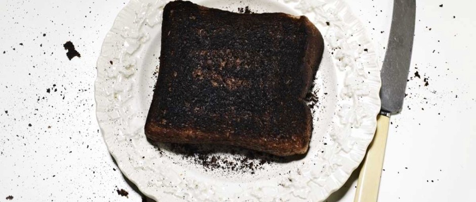

Charcoaly Burnt Toast

Description
Burnt toast is the perfect health food, and it tastes great. It is perfectly delightful on it's own but why not smother it in your favourite
fish paste for that extra health kick.
Ingredients
- 1 slice of bread
- fish paste (optional)
Method
- Turn the toaster to its highest setting and gently place the slice of bread into the toaster. Push the lever down and make yourself a cup of tea.
- Hopefully your smoke alarm has gone off by now, which is a good indication that your toast is ready. If your toast has popped up and the alarm hasn't gone off
then consider putting the toast down again.
- Once you've turned the smoke alarm off using the end of a broom, open the windows. Grab a metal fork and using a strong jabbing motion, remove the
toast from the toaster.
- Smother the charcoal with fish paste, if that is to your liking, otherwise just eat bone dry for that extra
delicious crunch.
Return to Home